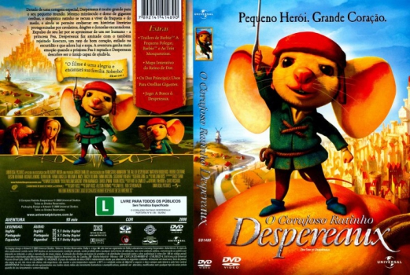

Outro Título:The Tale of Despereaux
País:United States, 93 minutos
Idiomas falados:Espanhol, Inglês, Português
Gênero(s):Aventura, Animação, Família
Diretor(s):Robert Stevenhagen, Sam Fell
Escritor(es):Gary Ross
Codec:MPEG-2 (DVD)
Número: 5840


Certificado:L
Sinopse:
Despereaux Tilling (Matthew Broderick) é um pequeno rato que sonha com aventuras. Um dia, ao visitar a biblioteca real, ele conhece a princesa Pea (Emma Watson). Ela lhe conta da tristeza que se abateu sobre ela e seu pai após a morte da rainha. Logo eles se tornam amigos, o que gera preocupação nos demais ratos, que são contrários às conversas com humanos. Desta forma Despereaux é levado ao Mundo das Ratazanas, onde não há luz. Ele é salvo por Roscuro (Dustin Hoffman), um rato banido pelos humanos mas que ainda sonha com atos heróicos.
Elenco:

Tipo de mídia: DVD5,
Legendas: Espanhol, Inglês, Português, Sem Legendas
Alugado: Não
Tela: Anamorphic Widescreen